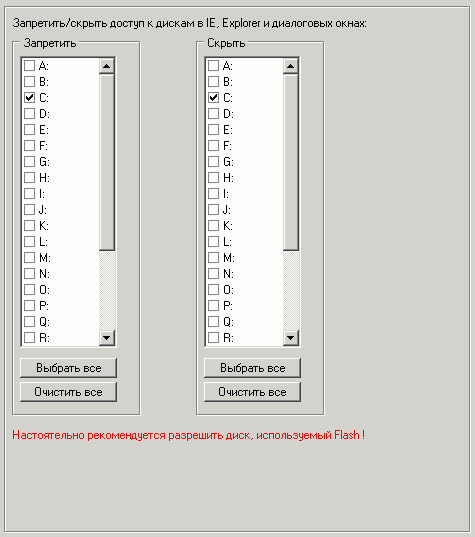

Здесь устанавливаются запреты на диски в диалоговых окнах открытия/сохранения файлов.
Шелл способен перехватывать такие окна, потому эти опции являются лишь дополнительными.
Физически же запись и чтение с этих дисков будут доступны другим программам, скрыты они будут только в стандартном проводнике, стандартном IE и диалоговых окнах Open/Save.
Рекомендуется разрешить диски, используемые под flash, дискеты, а также диск, на который установлена папка пользователя (если она не сетевая).